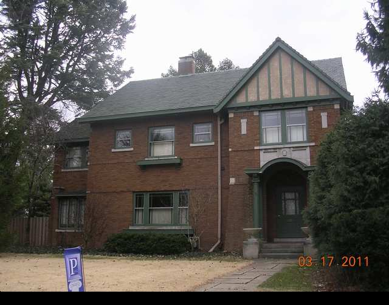

1707 E. Washington

- Cleon Keys and Isabelle Ream Residence (1918)
- Ream owned 1400 acres of land in NE McLean County, raised over 4,000 Norman and Shire draft horses, laid 72 miles of drain tile.
- Made his initial fortune as a prospector in the West.
- Eclectic English and American Arts and Crafts Style.